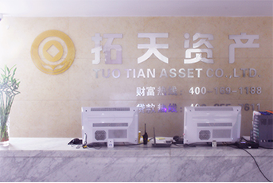

拓天速贷是基于互联网的金融信息服务平台，由拓天伟业（北京）资产管理有限公司旗下的拓天伟业（北京）金融信息服务有限公司运营。拓天速贷以透明、公平、高效为原则，为有资金需求的小微企业及有出借需求的个人提供规范、安全、专业的信息服务。拓天速贷秉承用心服务，诚信经营的经营理念，坚持以人为本，日事日毕，正道经营，共存共赢的管理理念，以安全、诚信、专业、创新、长远为核心价值观，坚持兴企安国的公司使命，拓天速贷将成为国内一流的互联网金融信息服务平台。
拓天速贷是基于互联网的金融信息服务平台，由拓天伟业（北京）资产管理有限公司旗下的拓天伟业（北京）金融信息服务有限公司运营。拓天速贷以透明、公平、高效为原则，为有资金需求的小微企业及有出借需求的个人提供规范、安全、专业的信息服务。拓天速贷秉承用心服务，诚信经营的经营理念，坚持以人为本，日事日毕，正道经营，共存共赢的管理理念，以安全、诚信、专业、创新、长远为核心价值观，坚持兴企安国的公司使命，拓天速贷将成为国内一流的互联网金融信息服务平台。
拓天速贷是基于互联网的金融信息服务平台，由拓天伟业（北京）资产管理有限公司旗下的拓天伟业（北京）金融信息服务有限公司运营。拓天速贷以透明、公平、高效为原则，为有资金需求的小微企业及有出借需求的个人提供规范、安全、专业的信息服务。拓天速贷秉承用心服务，诚信经营的经营理念，坚持以人为本，日事日毕，正道经营，共存共赢的管理理念，以安全、诚信、专业、创新、长远为核心价值观，坚持兴企安国的公司使命，拓天速贷将成为国内一流的互联网金融信息服务平台。
客服热线：400-169-1188(沟通时间：9:00-22:00)
客服邮箱：kefu@tuotiansudai.com
客户QQ:800036446
公司地址：北京市丰台区洋桥12号天路蓝图大厦8层
公司邮编：100068
交 通：地铁十号线角门东站A口出向北500米，公交529路、501路、485路、107路、603路、66路、
72路、698路、102路等
公司电话：400-169-1188
拓天速贷是基于互联网的金融信息服务平台，由拓天伟业（北京）资产管理有限公司旗下的拓天伟业（北京）金融信息服务有限公司运营。拓天速贷以透明、公平、高效为原则，为有资金需求的小微企业及有出借需求的个人提供规范、安全、专业的信息服务。拓天速贷秉承用心服务，诚信经营的经营理念，坚持以人为本，日事日毕，正道经营，共存共赢的管理理念，以安全、诚信、专业、创新、长远为核心价值观，坚持兴企安国的公司使命，拓天速贷将成为国内一流的互联网金融信息服务平台。
第三方资金托管，意味着投资平台不直接经手客户资金，也无权擅自 动用客户在第三方托管的资金，投资人通过第三方支付投资成功后，资金 将直接进入借款人账户，保证交易真实和投资人资金安全。投资后，资金 的所有流转使用信息都可查，项目拥有上市公司般的信息透明度，投资人 也将拥有最完整的知情权。所有尽职调查信息都会被公开，投资人在投资 前就能对项目有100%的掌控。我们的资金流转信息是透明的！
我们有着专属自己的项目实地调研团队，对每一个预备役的项目都 进行实地、全面、多批次的调研。通过借款个人的信用状况、财务状况 、抵押物状况、经营状况、还款来源等降低坏账风险，确保借款方信息 真实性，并确保预备项目的实现立体化、多层级的数据评估，以保证预 备项目的真实性、合法性。
我们为了投资人的资金安全，引入了第三方资金托管平台联动优势， 为投资人管理资金，我们平台不直接触碰用户资金，极大程度上保证了 用户资金的安全；并引入风险控制能力极强的合作伙伴帮助投资人把好 前置的信用风险闸门。
我们由专业人员组成风控部、合规部、法务部，通过对投资项目进 行实时监控及项目数据评估、识别、通报，严格把握风险调控，实现规 范业务操作、防范业务风险的目标。
我们技术团队成员均来自国内一流大型互联网公司和金融机构， 对于网络数据安全、并发交易请求处理、资金托管和支付业务等核 心技术有丰富实践经验，能够最大限度保障投资人和借款人的交易 信息安全。
我们采用国际领先的系统加密及保护技术，并由专人24小时严密 监控。我们承诺全力保障客户信息不外泄，并严格遵守所有关于可辨 识个人信息保存的法律法规的要求。
联动优势资金托管平台确保资金安全 两地三中心银行级别安全设施 支持安全套接层协议和256位加密技术 先进存储机制确保影像和合同文件数据安全 使用高端防火墙来提高网站确保安全性我们一直非常重视信用风险管理工作，根据中国的具体 国情制定了严格的信用评估和核查制度和流程，并引入了国 际最领先的信用分析和决策管理技术提供商的信用评分技术， 最大程度地保障了出借人资金的安全。
本网站由拓天伟业（北京）金融信息服务有限公司负责运营（以下“本网站”均指网站及拓天伟业（北京）金融信息服务有限公司）。在注册成为本网站用户前请务必仔细阅读以下条款。一旦成功注册成为本网站用户，您将被视为已充分理解并同意本协议全部内容；注册同时签署本协议，本协议立即在您与本公司之间产生合同法律效力。您注册成功后在本网站使用的全部服务及全部活动将受到本协议的约束并承担相应的责任和义务。若您不接受以下条款，请不要注册使用本网站服务。
1.1注册成为本网站用户，您须为中华人民共和国有效身份证明且年满18周岁具有完全民事行为能力的自然人。如不符合上述要求，请勿注册；否则，本网站保留终止用户资格、追究用户或向用户的监护人相关法律责任的权利。
1.2本协议下述所有条款及本网站已经发布的或者将来可能发布的各类规则，均为本协议不可分割的一部分，与本协议正文具有同等法律效力。在您与本网站共同签订本协议后，您在本网站的全部活动将全部适用本协议。请确保您已充分阅读、理解并接受本协议的全部条款及各类规则后，再注册成为本网站用户；注册时，您须同时承诺遵守中华人民共和国的各项法律规定，如有违反任何法律规定而产生相应法律后果的，您将以自己的名义独立承担所有相应法律责任。
1.3您在此须确认同意并知悉本网站有权根据需要不定时增加、删除或修改本协议或根据本协议制定、修改各类具体规则并在本网站相关系统板块发布。本网站将对修改的协议或规则进行公示，您有义务注意该等公示；新规则、协议一旦公示即被视为已经送达您，而无需另行单独通知。若您在本协议及各类规则变更后继续使用本网站服务的，将被视为您已充分阅读、理解并同意接受修改后的新协议及新规则，且您将被同时视为承诺遵守新协议及新规则的内容，并承担相应权利义务。若您不同意修改后的新协议及各类新规则的内容，应立即停止使用本网站服务，本网站有权中止、终止或限制用户继续使用本网站服务，但该等终止、中止或限制行为并不及于您在本网站已进行交易，及所应下承担的责任和义务，同时本公司不承担任何由此导致的法律责任。
1.4在您根据本协议及本网站有关规则、说明确认本协议后，本协议即在您和本网站之间产生法律效力。您须确认并同意，本协议不及于您与本网站其他用户之间因网上交易而产生的法律关系或法律纠纷。但与本网站其他用户在本网站签订的任何电子法律文本，您须确认并承诺按该等法律文本享有和/或放弃相应的权利、承担和/或豁免相应的义务。
2.1本网站包括但不限于以下服务：发布借款需求、提供交易机会、签订和查阅合同、代收、代付、提现及资金查询等服务，服务具体内容以当时服务内容为准。本网站不存放交易资金，仅提供网站居间服务，您与其他用户达成的所有交易项下资金的存放和移转均通过银行或本网站授权的第三方支付平台机构实现。
2.2您须确认并同意，在使用本网站服务进行具体某一交易前，您有义务仔细阅该笔交易相关协议及规则，充分了解并清楚知晓自身相应权利义务，在确认同意该笔交易相关协议及规则各条款后,请您再按网站服务流程确认交易状态，交易状态一经确认即视为您同意该笔具体交易所适用的协议及规则，您所确认的交易状态也将作为本网站为您进行相关交易或操作（包括但不限于冻结资金、代为支付或收取款项、订立合同等）的明确指令。您同意本网站有权按相关指令依据本协议和/或有关文件和规则对相关事项进行处理。
2.3 您须确认并同意，本网站可以基于交易安全和运行安全的需要，暂时停止提供、限制或改变本网站服务的部分功能，或新增其他功能。当本网站服务功能发生增加、减少或者任何变化时，只要您仍然使用本网站的服务，表示您仍然同意本协议或者变更后的协议。
2.4本网站对任何因您未能及时对交易状态进行修改或确认或未能提交相关申请所引起的纠纷或损失不承担任何责任，以上纠纷或损失须由您本人负责。
3.1第三方支付平台及金融机构
3.1.1根据本协议2.1条约定，本网站提供的代收、代付、提现以及查询等服务涉及本网站与第三方支付机构或金融机构的合作。您一经使用前述服务，即表示您不可撤销地授权本网站进行相关操作，该等操作不可逆转。 3.1.2针对代收、代付、提现以及查询等服务，您应按照有关文件及第三方支付机构或金融机构的规定向其支付服务费用，您与第三方之间就费用支付事项产生的争议或纠纷，与本网站无关。 3.1.3您须同意并接受第三方支付机构或金融机构关于资金代扣及划转的现状及各种原因所导致的局限，本网站不对前述服务的资金到账时间做任何承诺，也不承担与此相关的责任，包括但不限于由此产生的利息、货币贬值等损失； 3.1.4在您使用本网站服务过程中，由第三方提供的相关服务，相关责任由该第三方承担，本网站不承担该等责任。3.2您须保证并承诺，您在本网站平台进行项目交易的资金来源合法，并对该资金享有合法的所有权。您须理解并同意，在包括但不限于公安机关、检察机关、法院等司法机关、行政机关、军事机关等合法的协助要求下，本网站有权对您的账户及资金等进行查询、冻结或扣划等操作。
3.3您需了解基于交易安全等方面的考虑，本网站存在不时设定交易相关的事项的可能，该等祥光事项包括但不限于：交易限额、交易次数等。本网站的前述设定可能会对您的交易造成一定不便，您对此没有异议。
3.4 本网站发现因系统故障或其他原因导致处理发生错误，本网站将根据本协议规定通知您后尽快纠正该错误。如您因上述错误发生实际收到的金额少于您应获得的金额的情况，则本网站将在核实确认后，尽快将您应收金额与实收金额之间的差额存入您在第三方支付机构注册的账户。如您因上述错误发生实际收到的金额多于您应获得的金额的情况，则无论错误的性质和原因为何，您都应及时根据本网站向您发出的有关纠正错误的通知的具体要求返还多收的款项或进行其他操作。您理解并同意，因前述处理错误而发生的金额差项均不计利息，除因本网站恶意而导致的处理错误外，本网站对因前述处理错误而导致的任何损失（包括您可能因前述错误导致的利息、汇率等损失）不承担责任。
3.5因您自身的原因导致本网站服务无法提供或提供时发生任何错误而产生的任何损失或责任，由您自行负责，本网站不承担责任。
您在注册并使用本网站服务过程中，本网站有权收取服务费用。具体服务费金额以本网站公告或其他具体协议为准。您通过本网站与其他方签订协议的，须按照签署的协议约定向其他方支付费用。您须承诺按照本服务协议约定向本网站支付服务费用，并同意本网站有权自您有关账户中直接扣划服务费用。
5.1 用户信息注册
5.1.1您须同意根据本网站的要求提供自己的真实信息（包括但不限于真实姓名、联系电话、地址、电子邮箱等信息），并并承诺上述信息和资料为真实、准确、完整、合法有效和，复印件须与原件一致。 5.1.2您须了解，如您冒用他人信息或资料注册使用本网站服务，或未依本网站上述要求提供您自身信息和资料，由此引发的全部法律责任及后果均由您本人自行承担，本网站对此不承担任何法律责任；如您因此而给本网站造成损失，应赔偿相关损失。 5.1.3如您需变更向本网站提供的上述信息或资料，应及时向本网站提出变更申请并进行操作；如您向本网站提供的上述信息或资料已发生变更，但您在本网站未及时更新，由此导致的本网站服务缺陷或服务错误，及产生的相关法律责任和后果须由您自行承担。 5.1.4当您成功注册为本网站用户后，应当妥善保管本人用户名和密码，不得将用户名转让、赠与或授权第三方使用。您须确认并同意，本网站对于正确使用注册用户名及密码登陆本网站及由该用户名账户下发出的一切指令均将被视为用户本人的行为和真实意思表示，该等指令不可逆转，由此产生的一切责任和后果由该注册账户本人承担，与本网站无关。您提出的账户密码等账户信息被盗用等理由将不被认可，已订立的合同的效力不变，您须继续履行合同项下义务。5.2用户活动
5.2.1您须承诺在本网站依法依规进行活动，遵守中国现行法律、法规、规章、规范性文件以及本服务协议的约定，您不得利用本网站服务从事侵害他人合法权益。若您违反上述规定，所产生的一切法律责任及后果均由您自行承担，与本网站无关；因您违反上述规定而给本网站造成损失的，您应承担全部赔偿责任及相关法律责任。 5.2.2本网站没有监测网站内容的义务，但是您确认并同意为了更好地运营本网站并保护自身及本网站的其他合法用户，本网站保留根据法律、法规、政府要求透露、修改或者删除相关必要信息。本网站保留将用户违法违规行为及有关信息资料进行公示、计入用户信用档案、按照法律法规的规定提供给有关政府部门或按照有关协议约定提供给第三方的权利。 5.2.3如因您在本网站的某些行为或言论不合法、违反有关协议约定、侵犯本网站的利益等，本网站有权基于独立判断直接删除您作出的上述行为或言论，有权中止、终止、限制您使用本网站服务，而无需事先通知，亦无需承担任何责任。如您因上述行为给本网站造成损失，应承担相应的赔偿责任。5.3知识产权
5.3.1本网站中全部内容的版权均属于本网站所有，该等内容包括但不限于文本、数据、文章、设计、源代码、软件、图片、照片及其他全部信息（以下称“网站内容”）。网站内容受中华人民共和国著作权法及各国际版权公约的保护。 5.3.2非经本网站书面同意，您承诺不以任何方式、不以任何形式复制、模仿、传播、出版、公布、展示网站内容，包括但不限于电子的、机械的、复印的、录音录像的方式和形式等。 5.3.3您承认网站内容是属于本网站的财产。未经本网站书面同意，您亦不得将本网站包含的资料等任何内容镜像到任何其他网站或者服务器。任何未经授权对网站内容的使用均属于违法行为，本网站将追究您的法律责任。6.1您须了解并同意，本网站在任何情况下提供的服务均不含有任何明示或暗示的，对任何用户、任何交易的真实性、准确性、可靠性、有效性、完整性等的任何保证和承诺；您需审慎考虑根据自身风险承受能力，充分理解并衡量本网站披露的交易内容及交易对方信息的真实性、可靠性、有效性、完整性。
6.2您须了解并同意，本网站对于第三方网站上信息的真实性和有效性没有能力也没有义务保证，您应按充分阅读并理解第三方网站的服务协议，并按其服务协议而非本协议使用第三方网站。第三方网站的内容、产品、广告和其他任何信息均由您自行判断并承担风险，而与本网站无关。
6.3因您选择使用本网站提供的服务、参与的交易等而产生的直接或间接损失均由您自身承担，该等损失包括但不限于资金损失、利润损失、营业中断等。本网站及本网站的管理公司的股东、创始人、全体员工、代理人、关联公司、子公司、分公司均不对以上损失承担任何责任。
6.4因为本网站或者涉及的第三方网站的设备、系统存在缺陷、黑客攻击、网络故障、电力中断、计算机病毒或其他不可抗力因素造成的损失，均与本网站无关，本网站不承担赔偿责任，您只可与本网站协商终止本协议并停止使用本网站。本网站相关文件或本协议另有规定及中国现行法律法规另有规定的除外。
7.1您须理解并同意，本网站有权按照本服务协议约定方式，对您自愿提供的和本网站因提供服务所需而自行收集的您的个人信息和资料进行使用或者披露。
7.1.1为防止非法用户通过本网站从事非法活动或其他刑事犯罪活动，保护本网站及正常用户的合法权益，您须同意并授权本网站在必要时可通过人工或自动程序对您的个人资料进行评价和衡量。 7.1.2您须同意并授权本网站基于履行有关协议、解决争议、调停纠纷、保障本网站用户交易安全的目的使用您的个人资料。本条所指“您的个人资料”包括但不限于：您自行提供的以及本单位信审行为所获取的其他资料。本网站有权调查多个用户以识别问题或解决争议， 特别是本网站可审查用户的资料以区分使用多个用户名或别名的用户。 7.1.3您须理解并同意，为使客户在使用本网站服务时能得到更为顺利、有效、安全、舒适的交易体验，本网站可以使用客户的个人资料以改进本网站的推广宣传工作、分析网站的使用率、改善网站的内容和产品推广形式，以使本网站内容、设计和服务更能符合用户的要求。 7.1.4您须理解并同意，本网站在某些情况下利用您的资料与您联络，并针对您的兴趣向您传递以下信息，包括但不限于：有针对性的广告条、行政管理方面的通知、产品提供以及有关您使用本网站的通讯。您接受本协议即视为您同意收取这些资料。7.2您须理解并同意，授权本网站在您使用本网站服务进行交易后，将您以下信息包括但不限于：真实姓名、联系方式、信用状况等必要的个人信息和交易信息披露给与您交易的另一方或本网站的合作机构，该合作机构仅限于本网站为完成拟向您提供的服务而合作的机构。本网站有义务根据有关法律、法规、规章及其他政府规范性文件的要求向司法机关和政府部门提供用户的个人资料及交易信息。
7.3本网站采用行业标准惯例以保护用户的个人信息和资料，囿于技术限制，本网站不能确保用户的全部私人通讯及其他个人资料不会通过本条款中未列明的途径泄露出去。
7.4非因以下条件，您须理解，您无权在本网站提供的交易活动中要求本网站提供其他用户的个人资料：
（1）您已向法院起诉其他用户的在本网站活动中的违约行为； （2）与您有关的其他用户逾期未归还借款本息； （3）本网站被吊销营业执照、解散、清算、宣告破产或者其他有碍于您收回借款本息的情形。7.5您须同意并保证非因适用法律规定、被有管辖权的法院或政府部门要求披露，您不得将您您通过签署有关协议等方式获得其他用户的个人信息，用于除还本付息或向借款人追索债权以外的其他任何用途。
如一方发生违约行为，守约方可以书面通知方式要求违约方在指定的时限内停止违约行为，并就违约行为造成的损失要求违约方进行赔偿。
9.1本协议内涉及的通知将通过以下方式送达，包括但不限于：公示、您在注册时提供的电子邮箱、站内消息、手机短信。您须知悉并同意，如以公示方式作出，在本网站一经公示即视为送达；此外，向您个人发布的具有专属性的其他通知将由本网站向您在注册时提供的电子邮箱，或本网站在您的个人账户中为您设置的站内消息系统栏，或您在注册后在本网站绑定的手机发送，一经发送即视为送达。您须密切关注您的电子邮箱 、站内消息系统栏中的邮件、信息及手机中的短信信息。
9.2您须理解并同意，于向您提供服务的目的，本网站出可以向您的电子邮箱、站内消息系统栏和手机发送有关通知或提醒；若您不同意接收上述信息，请在本网站相应系统板块进行设置，但您须同时知悉并同意，若您设置不接收有关通知或提醒，您将有可能无法接收该等通知信息，针对由此可能产生的损失及法律风险，您不得以您未收到或未阅读上述信息等理由主张相关通知未送达于您。
10.1您同意签订本协议后，本协议始终有效，除非本网站终止本协议或者您申请终止本协议且经本网站同意。在相关法律法规、政府部门的要求下，或当您违反了本协议或相关规则，本网站保留通过站内信、电子邮件通知等方式终止本协议、关闭您的账户或者限制您使用本网站的权利。
10.2当您决定停止使用本网站服务时，您须清偿所有应付款项，包括但不限于借款本金、利息、罚息、违约金、服务费、管理费等；同时，将您在本网站账户中的可用款项（如有）全部提现或者向本网站发出其它合法的支付指令；随后请向本网站提出注销该用户账户申请，经本网站审核同意后，您的用户账户正式注销。
10.3您须知悉并同意，您在本网站账户的暂停、中断或终止不代表您责任的终止，若您在使用本网站服务期间存在违约或负担损害赔偿责任，账户注销后您仍须对上述法律责任进行承担，同时本网站仍有权保留您的相关信息。
10.4网站用户死亡或被宣告死亡的，其在本协议项下的各项权利义务由其继承人继受。若用户丧失全部或部分民事权利能力或民事行为能力，本网站有权根据有效法律文书（包括但不限于生效的法院判决等）或其法定监护人的指示处置与用户账户相关的款项。
10.5若您在注册成为本网站用户时使用的是第三方网站账号，则您应对您该第三方网站账号拥有合法的使用权。您须知悉并同意，当您丧失对第三方网站账号合法使用权后，本网站有权停止对您该用户账户提供服务；若此时您该用户账户尚存有余额的，本网站将会为您妥善保管；您可通过将原网站账户下余额转移到您另外合法注册的本网站账户的方法，取回您原有余额；若您在自助完成更换账户过程中发生障碍，您可以向本网站提出以银行账户接受原有资金的请求，经核验属实后，本网站可配合您将原有资金转移到以您真实姓名登记的银行账户下。
10.6若您发现第三人冒用或盗用您的在本网站的用户账户及密码，或其他任何未经您或本网站合法授权的情形，应立即以有效方式通知本网站，您可以要求本网站暂停与上述行为相关的网站服务，否则对由此产生的一切责任均需您个人承担。同时，您理解本网站对您的请求采取行动需要合理期限，在有效行动生效前，本网站对第三人使用该服务所导致的损失不承担任何责任。
10.7您须理解并同意，在必要时本网站有权无需事先通知，即终止向您的用户账户提供服务，并可能立即暂停、关闭或删除您的用户账户及该用户账户中的所有相关资料及档案；但本网站会将您滞留在这些账户的全部合法资金退回到您提供的银行账户中。
1. 本协议的签订、效力、履行、终止、解释和争端解决受中国法律法规管辖。
2. 因本协议发生任何争议或与本协议有关的争议，首先应由各方友好协商解决，协商不成的，任何一方有权将纠纷提交至本网站管理公司所在地有管辖权的人民法院诉讼解决。
12.1当本网站对于用户的某些或某一项违约行为放弃行使本协议规定的权利的，不得视为本网站对用户的其他违约行为也同样放弃主张本协议项下的权利。
12.2本协议部分条款被认定为无效时，不影响本协议中其他条款的效力。
12.3本协议不涉及您与本网站其他用户之间因网上交易而产生的法律关系及法律纠纷，但您须在此同意将全面接受和履行与本网站其他用户通过本网站签订的任何电子法律文本，并承诺按该法律文本享有和/或放弃相应的权利、承担和/或豁免相应的义务。
12.4本网站对本协议享有最终解释权。本协议及本网站有关页面的相关名词可互相引用参照，如有不同理解，则以本协议条款为准。
1、拓天速贷是一个什么类型的网站？
答：您好，拓天速贷是拓天伟业（北京）金融信息服务有限公司旗下一家专门从事，金融信息服务、资产管理、投资管理的专业服务类网站平台，公司注册资本5000万，位于北京市丰台区。拓天速贷的核心架构由多位从事多年投资管理、风险管控、金融服务以及技术研发的专业人士组成。以专业的金额相关行业经验，累计7年成功经营的基础发展形成的金融信息服务管理平台。 拓天速贷不代表基金公司、银行或者保险公司，而是站在非常公正的立场上严格地按照客户的实际情况来帮客户分析自身财务状况和理财的需求，通过科学的方式在个人理财方案里配备各种金融工具。2、拓天速贷与联动优势的合作关系？
答：联动优势，全称联动优势科技有限公司由中国移动、中国银联于2003年8月联合发起成立。作为专业的移动电子商务服务提供商，为普通个人用户提供了安全、便捷、易用的移动电子商务服务。2011年8月31日，成功入选央行公布的第二批第三方支付牌照名单。 联动优势作为拓天速贷的资金安全保障方，为拓天速贷的客户资金安全，提供安全稳健的资金托管保障，避免了用户投资资金的流失及其它违法事件的发生。3、拓天速贷与京都律师事务所的合作关系？
答：北京市京都律师事务所成立于1995年，是国内较早设立的合伙制律师事务所之一。目前，京都已建设成为一家提供包括非诉业务、民商诉讼、刑事诉讼等全面法律服务的综合性律师事务所。其中，京都在刑事诉讼领域居于全国领先地位。 京都律师事务所作为拓天速贷的唯一法律服务保障方，为拓天速贷及其用户提供专业高效的法律保障及法律援助服务，确保您的投资理财拥有合法的保障。4、拓天速贷合法吗？经营的法律保障是什么？
答：拓天速贷作为投资信息发布平台，从事投资理财类信息的收集、证实、发布、交易服务的相关工作，并且民间借贷是受法律保护的，民间借贷是一种民事法律行为，它是指自然人之间、自然人与法人之间、自然人与其他组织之间形成的借贷关系。根据《合同法》第196条规定“借款合同是借款人向贷款人借款，到期返还借款并支付利息的合同”，《合同法》允许普通民事主体之间发生借贷关系，并允许出借方到期可以收回本金和符合法律规定的利息。 电子合同是受法律保护的。 根据《合同法》和《电子签名法》的规定，当事人可以采用合同书、信件和数据电文（包括电报、电传、传真、电子数据交换和电子邮件）等形式订立合同，并通过以电子形式所含、所附用于识别签名人身份并表明签名人认可其中内容的数据电文等电子签名方式进行签署，当事人不能仅因合同采用电子签名、数据电文的形式就否定其法律效力。5、拓天速贷主要经营什么类型的产品？
答：您好，拓天速贷主要提供投资信息发布、更新、整理，并促使客户以一对一式的形式，进行债权式理财以“转让债权/购买债权”的形式获得债权，并在相应理财期限内获得固定理财收益。6、拓天速贷网站密码丢失如何找回？
答：您好，在用户登录界面有密码找回的方式，您可以通过预制的手机号码或电子邮箱，发送认证信息给与密码的找回。7、拓天速贷注册的手机号变更，如何处理？
答：您好，目前拓天速贷网站，不支持手机号的变更，如您变更手机号码，请你使用新的手机号码，重新注册即可。8、拓天速贷产品收益如何
答：您好，拓天速贷目前收益是按月返息、到期返息、按月本息的形式，为您提供专业安全的投资信息发布。所有产品收益均来源于信息的发布者，所提供的标的物收益。9、拓天速贷是否有手续费？是多少？
答：你好，目前我们按照第三方支付平台联动优势的收费标准，投资人提现：3元/笔，充值无手续费用。10、拓天速贷如何保障资金安全？
答：您好，拓天速贷是由联动优势代为提供第三方资金托管，及信审方面的工作，拓天速贷不会触及用户的资金。联动优势作为第三方支付平台，承担资金托管机制的作用，资金流转全部在第三方支付平台实现，拓天速贷不直接经手归集客户资金。拓天速贷本身不吸储、不放贷，只作为中介撮合借贷双方。资金第三方托管模式能够满足互联网投融资平台与客户资金和信息流分离，让资金的去向更加明确、更加透明，能够为用户资金进行有效的风险隔离。11、拓天速贷是否可以随时提款？收益是否有变化？
答：您好，投资金额未到期是不支持提现的，但账户余额可随时提现。拓天速贷目前不支持已购买理财产品的金额随意提款，请您合理安排投资金额。12、拓天速贷收益是日息还是到期收益？
答：您好，拓天速贷是按照投资标的物的债券周期，提供按月返息、到期返息、按月本息的方式，提供投资信息发布的平台。13、拓天速贷最小、最大购买产品金额是多少？
答：您好，拓天速贷目前可接受投资金额是50元至10万之间。14、拓天速贷利率是否会有变化？为什么？
答：您好，会有变化，因为投资标的物的不同，以及市场、标的物的信息变化进行调整，所以会有变化，但投资周期内利率不会变化，如您投资时收益是15%，那么不管市场或标的物信息如何调整，在您投资周期内，拓天速贷都会按照这个比例，计算您的收益。15、拓天速贷是否可以绑定多张银行卡？
答：您好，拓天速贷遵循资金安全服务提供商，联动优势的服务标准，注册用户只能绑定一张银行卡，如果丢失需要更换相关信息，请联系客服经理，我们会协助您尽快更新相关信息。16、拓天速贷服务时间？
答：您好，拓天速贷的服务时间为每日9:00-21:00，节假日无休息。客服电话：400169118817、拓天速贷是否会有短信提示？
答：您好，拓天速贷的所有债权信息，均是可以在网站上面进行查询的，这点请您放心。18、购买产品是否会签署纸质合同？
答：您好，拓天速贷目前使用电子合同来保障您的权益，如您想到我们公司来访，考察，欢迎您拨打客服电话：4001691188，我们将为您安排相关人员的全程接待，谢谢。19、拓天速贷标的物信息是否可以在网上进行查询？
答：您好，拓天速贷的所有标的物信息，均是可以在网站上面进行查询的，以确保您对投资标的物的真实性有一个明确的审查，这点请您放心。20、拓天速贷提现时长为多久？
答：您好，拓天速贷目前提款到账时间为T+1，成功到账后，您可以查询银行发送的相关业务短信。21、我联动优势的密码丢失了，如何才能找回？
答：您好，联动优势是拓天速贷的资金保障方，如果您联动优势的密码丢失或者遗忘，需要您自行发送业务短信，通过联动优势的短信系统，进行密码的修改和找回，修改和找回的方式如下，请你按照需求进行操作。